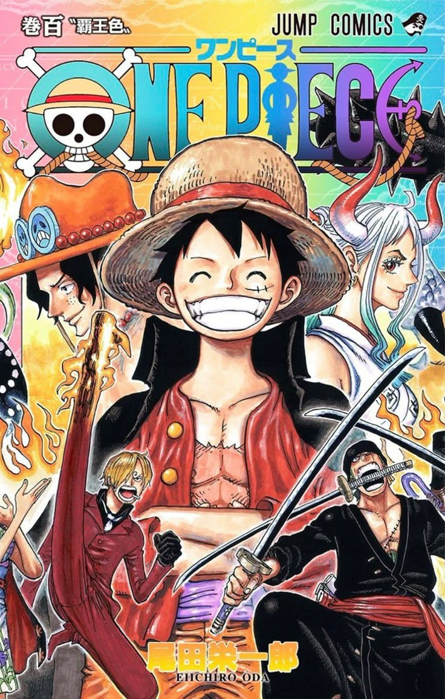
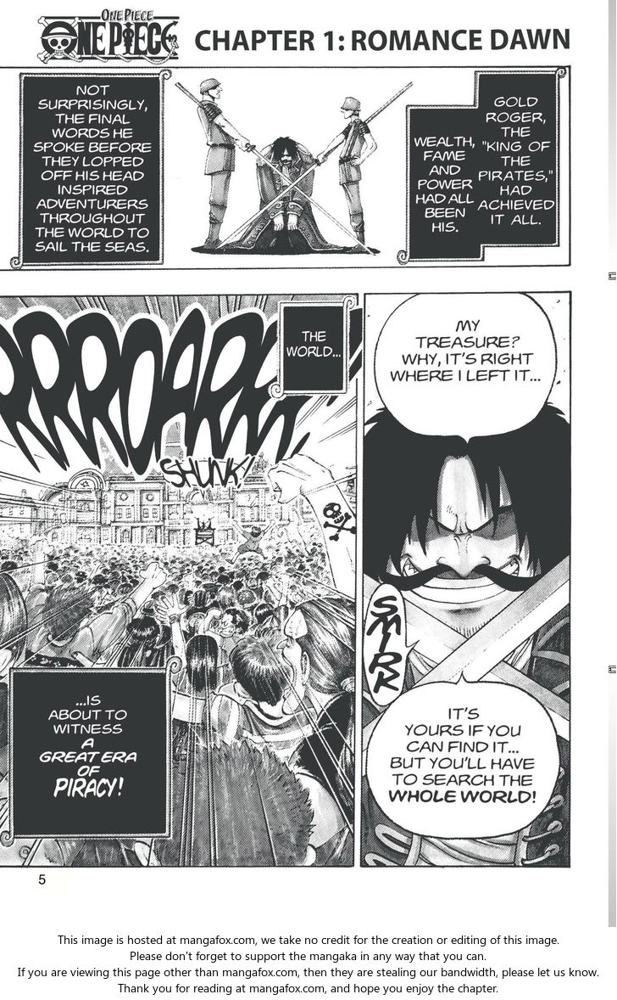

One Piece
by Eiichiro Oda
Synopsis
Monkey D. Luffy, a young pirate with a rubber body, sets sail across the Grand Line with his crew, the Straw Hat Pirates, to find the legendary treasure known as the One Piece and fulfill his dream of becoming the King of the Pirates.
Chapter 1: Romance Dawn — The Dawn of the Adventure

Years ago, a legendary pirate named Gol D. Roger revealed that his greatest treasure, the One Piece, was hidden somewhere in the world. His words inspired countless people to sail the seas in search of the ultimate prize.
Monkey D. Luffy dreams of becoming the King of the Pirates. Inspired by the red-haired pirate Shanks, Luffy sets out to find the legendary treasure and build a crew of his own. His incredible journey begins as he faces the dangers of the sea and pursues his dream of freedom and adventure.
— End of chapter —